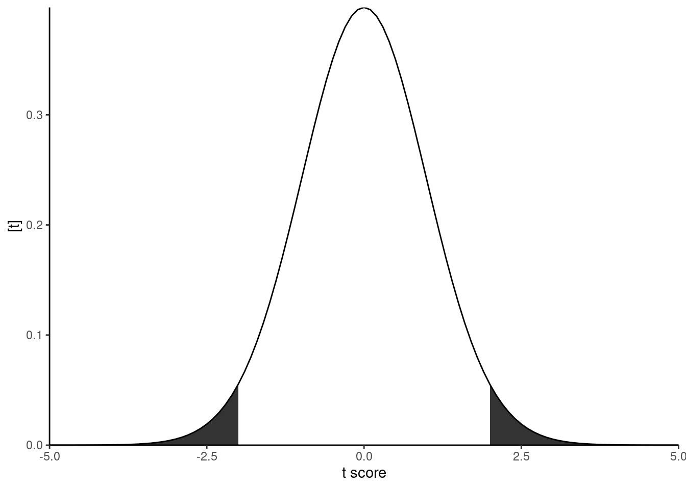

for \(i =1, 2, ..., n\), where \(n\) is the total number of observations, \(\mu_i\) is the mean of the \(i\)th observation, \(x_{1i}\), \(x_{2i}\), and \(x_{3i}\) are indicator variables that identify the species as A, C, or D, and thus \(\beta_1\), \(\beta_2\), and \(\beta_3\) are the means of genotypes A, C, and D, respectively, and \(\sigma^2\) is the variance of the data.
m <-lm(agb_g ~0+ species , data = data)beta_hat <-coef(m)m
The t statistic \[T = \frac{\hat\theta}{s.e.(\hat\theta)}\]
is used to compute the p value in hypothesis tests. The p value is the probability of observing the t statistic under the conditions of the null hypothesis. In this formula, \(\hat\theta\) is an estimator of an operation of the parameters, e.g., \(\theta = \beta_1 - 0\) or \(\theta = \beta_1-\beta_2\).
The t distribution is similar to a normal distribution, but with heavier tails.
x <-seq(-5, 5, by = .1)dt <-dt(x, dfe)tc <-qt(.975, dfe)data.frame(x, dt) %>%ggplot(aes(x, dt))+geom_ribbon(aes(ymin =0, ymax = dt), data = . %>%filter(x <-tc))+geom_ribbon(aes(ymin =0, ymax = dt), data = . %>%filter(x > tc))+labs(y ="[t]", x="t score")+geom_line()+theme(aspect.ratio =1)+coord_cartesian(expand = F)+theme_classic()

In the summary output, we have \(\theta = \beta_j-0\), i.e., we are testing if a given \(\beta_j\) is different to zero.
t_A <- (beta_hat[1] -0)/se[1]t_A
speciesA
23.63803
t_C <- (beta_hat[2] -0)/se[2]t_C
speciesC
19.29225
t_D <- (beta_hat[3] -0)/se[3]t_D
speciesD
17.25216
dt(t_A, dfe)
speciesA
1.087321e-34
dt(t_C, dfe)
speciesC
2.495304e-29
dt(t_D, dfe)
speciesD
1.624738e-26
summary(m)
Call:
lm(formula = agb_g ~ 0 + species, data = data)
Residuals:
Min 1Q Median 3Q Max
-1.04136 -0.46186 0.03253 0.44846 1.41732
Coefficients:
Estimate Std. Error t value Pr(>|t|)
speciesA 2.9366 0.1242 23.64 <2e-16 ***
speciesC 2.3967 0.1242 19.29 <2e-16 ***
speciesD 2.1433 0.1242 17.25 <2e-16 ***
---
Signif. codes: 0 '***' 0.001 '**' 0.01 '*' 0.05 '.' 0.1 ' ' 1
Residual standard error: 0.6086 on 69 degrees of freedom
Multiple R-squared: 0.9468, Adjusted R-squared: 0.9445
F-statistic: 409.5 on 3 and 69 DF, p-value: < 2.2e-16